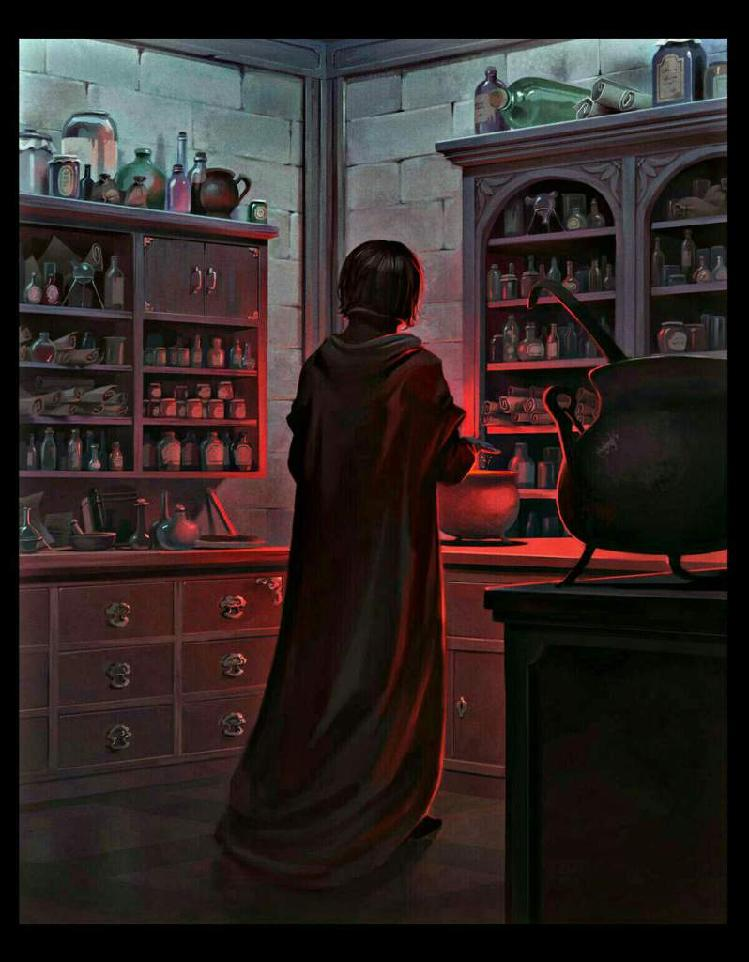

Chapter 18

Broadening of Spheres
“Okay, I give up,” Nott said a week later as he, Draco, Rigel, Pansy, Zabini, and Bulstrode, who was a semi-permanent addition to their group after the incident with Greengrass and Davis, lounged around their dormitory with nothing to do, “What are you doing with those things, Rigel? You’ve been glaring at them all week.”
Rigel looked up with surprise from the little red ball she was holding—she wasn’t sure but she thought that was the first time Nott had called her by her first name. “It’s something Snape’s got me doing,” she said.
“What, frowning at anything Gryffindor red? Sounds like Snape, but how does that help you with Potions?” the brown haired boy asked.
“Those are Medi-minis,” Bulstrode said, glancing over.
“What are they?” Pansy asked, peering curiously at the little red orb in Rigel’s hand.
“They’re for kids who want to be Mediwizards,” the bigger girl elaborated, “You practice putting magic into them, like a Healer does when they heal someone.”
Draco made a sound of understanding, “They’re helping you control your magic, right, Rigel?”
“Yes,” she shrugged, “It’s more challenging than I expected. Sometimes they explode, but I can never get them to turn green like I’m supposed to.”
“What do you visualize while exercising your raw magic?” Zabini asked while leaning against Nott’s bedpost.
Rigel frowned thoughtfully, “I guess I just picture shoving my magic into the ball, if anything.”
Zabini straightened from his relaxed position with an expression of incredulity, “Shoving?” he rolled his eyes, “No wonder you’re destroying the poor things. Don’t you think you should try picturing something less violent?”
My magic is violent, Rigel thought to herself, but she asked, “Does the visualization really make any difference? It’s just a mind trick to help you focus.”
This time it was Draco who gave her an incredulous look, “Did your parents lock you in the basement with a Potions Encyclopedia and teach you nothing else?” He sighed, muttering, “Practically a muggle,” under his breath.
“If you explained it to me, I might be able to understand,” Rigel said in a tone she told herself was patient and not at all sarcastic.
“Look, just because it’s in your mind doesn’t mean it’s not real,” Draco said very slowly, “Magic makes it real. That’s why mind-magic works so effectively, that’s why it matters if you cast a spell without really meaning it, and you should know this because that’s why your magic does things without you saying a spell sometimes.” Draco ran a hand through his hair, “How else do you think accidental magic works? It comes from the mind, the will, which shapes the magic even before kids have the words to command it. If it didn’t, it would appear without reason, but there’s always a trigger for accidental magic, because magic does not have a mind of its own. So, yes, what you do with your mind while exercising your magic affects how the magic expresses itself.”
Rigel thought about that, turning the words and ideas over in her mind and mixing them with what she already knew. It would explain a lot, she mused, and Draco has no reason to lie. If this was true, she needed to work on Occlumency more than ever. If the mind was connected to magic, then a well-ordered mind should produce well-ordered magic. It also shed light on the idea of making the mind into a fortress somewhat. Apparently if she could trick her mind into thinking of itself as a fortress, then her magic would make it literally so. Flint might have been on to something about mind-reading protection after all. Maybe she should listen to upperclassmen more. Probably she should listen to her friends more, too. Maybe—
“Rigel, are you listening to me?” Draco demanded.
“Yes,” Rigel said, “So no more shoving?”
“… Yes, Rigel, please don’t ever shove your magic again,” Draco sighed.
“Okay,” Rigel went back to staring at the little red ball. No shoving. Pushing? No, probably not good either, but how else can I get magic into the ball… Yanking? I could pull a piece of magic apart or maybe cut a piece away—her body gave an abrupt shiver of disgust and rejection, and she quite agreed, Yeah, definitely not cutting any of my magic up. I could leak it, but that seems really passive, like I wouldn’t be able to control where it leaked. I could try shooting it out like a laser, but that’s still really violent. Pouring, maybe?
She tried mentally pouring a bit of magic into the little red orb. It slowly, gradually turned brown, and she could sort of feel the magic trickling out of her with a sixth sense she’d always known she had but never paid much attention to. It was hard, but satisfying work. Still, even as the ball faded into green and her friends congratulated her on her first success, it didn’t feel quite right. She was still doing something wrong, and it felt uncomfortable. For all that most wizards saw their magic as a tool to be wielded, she’d been mentally assigning it a personality for so long that even though it had been given a negative personality in her head, it still felt too… arrogant, maybe, or presumptuous, to order it around if she didn’t need to. In fact, it felt vaguely rude.
She took another ball from the bag and tentatively, feeling stupid but determined, asked her magic to fill the ball. The orb turned green so quickly it might have been a muggle traffic light, and if she hadn’t been waiting for it she wouldn’t even have felt the tell-tale thrumming that zinged through her like a weak current. She blinked in surprise. That was easy. It was as if she’d been doing magic with weights around her neck all along and suddenly they were gone and it just flowed out of her. She marveled at how much energy she must have been wasting fighting with her magic when she could have just asked it to cooperate with her all along.
“Well, it looks like you’ve got the hang of it,” Bulstrode said, eyebrows raised.
Rigel happily took the other 10 balls out of the bag (three had exploded) and one by one asked her magic to please fill them up. The other first years watched with interest, and, after the fifth one, incredulous unease. When all twelve of the non-exploded orbs were green, Rigel put them back in her bag with a satisfied smirk. Take that, she thought to Snape and Draco and everyone else who thought magic had to be a witless tool.
“Aren’t you… tired?” Pansy asked what the rest of them were apparently thinking. Rigel wondered if she would ever get used to the sheer disbelief she was confronted with by people around her. Honestly, you’d think wizards, who could use magic, would be less narrow minded about the things they expected from the world. Not that she could talk, she reminded herself sheepishly, having only just thought of working with her magic instead of against it or independently of it herself.
“It’s only six o’clock,” Rigel said, deciding deliberate obtuseness was the way to avoid such questions.
“So much more than meets the eye,” Zabini muttered in a way that didn’t sound entirely complimentary.
“I’m done trying to figure Rigel out for the day,” Nott said tiredly, “Let’s just go to dinner.”
The others shrugged or nodded their agreement, Rigel among them. After dinner Rigel went by Snape’s office, still flushed (metaphorically speaking; she rarely blushed at anything living with two boys these days) with success.
The voice that answered her knock was, empathetically, not Snape. Unless Snape was for some reason Polyjuiced as a teenaged girl.
A very pretty teenage girl, as it turned out when Rigel let herself into the office. The place looked even blander than usual without Snape’s overwhelming presence filling up the meta-space. The girl lounging in Snape’s chair with her feet up rather bravely on the Professor’s immaculate desk had long black hair and heavy eye makeup that gave her too-pretty face a more down to earth edge. After an initial moment of confusion on Rigel’s part (probably due to the fact that there was a girl in Snape’s chair), Rigel took in the other girl’s Slytherin tie and placed her as the prefect who had given them the password on the night of the Sorting Feast.
“Need something?” the prefect asked in a bored drawl without looking up from the magazine she was flipping through.
“Professor Snape,” Rigel said.
“No, I’m Alesana Selwyn,” the blue-eyed girl flicked a section of her long hair over her shoulder in an absent-minded movement.
“I meant I’m here to see Professor Snape,” Rigel said, feeling a bit awkward explaining something fairly obvious, just standing in front of the desk while the girl ignored her in favour of scanning pages in her magazine.
“Hmm,” the prefect finally looked up from what she was doing and met Rigel’s gaze challengingly, “Why?”
“I’ve finished an assignment for him and was told to bring it by whenever I was done.”
“Leave it here,” Selwyn said, already turning another page with a blank look on her face.
“I’d rather give it to him myself,” Rigel said as politely as she could while refusing the upperclassman. She probably could have left the bag of orbs on his desk, but then she wouldn’t know what to work on next.
Selwyn rolled her eyes and huffed out an exasperated laugh, “I’m not gonna read your essay on frogspawn, kid. I promise I’ve got better things to do. Just leave it.”
“It’s not an essay,” Rigel said evenly, “Can you tell me when the Professor will be back?” Remembering something the prefect had said the night she’d introduced them to Slytherin, she added, “I’d consider it a favour.”
“Oh, really?” she raked Rigel with kohl-lined eyes, “And what could you possibly have to repay such a favour?”
Rigel considered offering to help with Potions, like she usually did, but somehow in the face of the older girl’s unimpressed stare it would have felt like bragging, so she shrugged, “You never know.”
“Right,” Selwyn tossed the magazine down on the table and Rigel noticed for the first time that it was written entirely in Runes, “Somehow I doubt that, but it doesn’t matter. Your name is Black, yes?”
“Yes,” Rigel said.
“In that case, Professor Snape’s in Lab One,” Selwyn told her, a slight smile on her lips, “He mentioned you might be by. Of course, he mentioned that last night, and the night before, too, but in any case, I’m to point you in his direction.”
Rigel cocked her head curiously, “You’ve been sitting in here for three nights straight?”
“All week,” she corrected, tapping her foot to a soundless rhythm, “Someone’s got to be available for answering questions and handling other minor distractions while our Head of House is chained to his cauldron. At least you’re not another second year wanting help with weather charms. One more kid conjures hail on my head and I’m putting myself in quarantine.”
“Well, thank you for your help,” Rigel said.
“I’d say ‘anytime’, but…” she trailed off, apparently considering the end of her sentence to be self-evident. Rigel nodded anyway and left the office.
Lab One was Snape’s private Lab and as such was protected by a series of tightly woven wards, but since they didn’t react to her presence, she assumed Snape left them “open” while he was working in case he was needed. The Lab was a marvel of organization and efficiency, if indeed words so colourless could describe such sheer beauty. Glass cabinets lined the walls, filled comfortably with ingredients, which Rigel noted were arranged by use and classification rather than alphabetically as the student stores were. The actual workstations were set up in a horseshoe; the countertops were the same white stone as the floor, which would cause most ingredients to show up perfectly against it, and sinks were set at regular intervals between stations.
When Rigel entered, knowing better than to knock in case he were in the middle of a delicate stage, Snape was standing motionless in the center of the open circle, looking like a conductor overseeing his orchestra as his sharp eyes monitored several simmering cauldrons at once. She cleared her throat quietly once she was fairly certain he wasn’t mentally timing anything and Snape turned around to raise an eyebrow at her, not seeming startled by her presence. Perhaps the wards were tied to him even when loose.
Though his eyes took in everything with customary alertness, Snape’s shoulders lacked their usual stiff posture, and the harsh lines around his mouth spoke as eloquently of the Potion Master’s exhaustion as if he had confessed it in his own words. “Mr. Black. I admit I was not expecting to see you so soon, despite the message I left with Miss Selwyn. How is your assignment progressing?”
“Finished, sir,” Rigel took out the bag of now-green Medi-minis and held it out with a grin, “Twelve out of fifteen.”
“Indeed?” Snape took the bag after another quick glance around the lab, “These are perfectly imbued,” he noted after taking one out and examining the colour, “I am suitably impressed, Mr. Black. How did you gain this level of control so quickly?”
Rigel watched him stow the bag in one of the many cabinets and shrugged lightly, “My magic and I have come to an understanding, that’s all.”
“And do you believe that you are now capable of imbuing magic into a potion consciously?” Snape asked with raised eyebrows.
Rigel hesitated, “Can I ask a question before I answer?”
“You may,” Snape’s face was expressionless.
“When I was putting magic into the balls, I just kept going until they were full. Does it matter how magic gets put into a potion?”
“Very good question,” Snape nodded in rare approval, “Unlike the exercise you completed, there is no need to imbue a potion with as much magic as you can stand. Every potion has a unique threshold where raw magic is concerned. Once that threshold is reached, the potion is effective, and adding more magic simply makes it more effective. Because of this, there is no need to go above the threshold for most potions. For example, there would be no purpose in making a potion which was extra effective at vanishing toenails, because once the toenails are vanished they cannot become more so. Exceptions to this rule include most potions for Healing as well as those that effect changes in degrees, such as Strengthening or Weakening Solutions. For those potions, the stronger the brewer, the more effective it will be, provided it is brewed correctly, of course.”
“How does one know if the threshold is reached?” Rigel asked, frowning slightly, “Is trial and error the only way to gauge the level of magic needed to make a particular potion effective?”
“Thankfully, no,” Professor Snape said, “At this point you should have enough awareness of your conscious magic to be able to sense its use. If you concentrate on that feeling while brewing you will be able to extend your sense to include the potion itself. This is true for any magical object you might find yourself working with; as long as your magic is connected to the object, consciously or unconsciously, you should be able to become ‘magically aware’ of that object. For potions, this means you will be able to sense when a potion’s threshold has been reached and subsequently withdraw your magical connection with it.”
“Do potions have an upper limit as far as magic is concerned?” Rigel asked, “If you put too much magic in, for instance, would it cause the potion to become unstable?”
“Generally speaking, no,” Snape said, “Magic in potions usually makes things more stable, not less. That is why dangerous and complicated potions such as Wolfsbane can be… soothed, so to speak, by imbuing them with a great deal of magic. It holds the more reactive ingredients together safely. That said, some potions will indeed react negatively in theory if imbued with too much magic, but the amount of magic needed to provoke such a reaction would be too much for anyone not a Lord-level wizard to manage to put in. For practical purposes, the only consequence would be wasted magic and exhaustion for the brewer.”
Snape took a moment to check each of his cauldrons while Rigel turned the information over in her head. He looked to have about eight different cauldrons brewing, though several of them seemed to be the same potion.
“I think I could correctly imbue a potion with magic now,” Rigel said finally, “But I would like to test that theory before stating my competence with confidence.”
“Very well,” Snape gestured to an empty workspace on one end of the almost-circle of lab stations, “You may use that cauldron to brew an Allergy Relief Potion. If you are unable to recall to recipe, say so, do not attempt to brew blindly out of misplaced pride.”
“Yes, sir,” Rigel said, though she doubted she’d ever forget how to make the first potion she’d ever made wrong five times in a row.
Rigel stowed her things safely out of the way and began setting up the station, checking and double-checking the cauldron, stirring rods, and other brewing implements for rust or wear despite them being in Snape’s personal lab. It was just good brewing practice. She found the ingredients easily, though the aloe was sorted with the lilies rather than with the asphodels, and began brewing. She and Snape ignored one another like they were old hands at it, and she wondered in the tiny part of her mind not completely engrossed in dicing and stirring whether the ability to focus on one thing to the detriment of all else was a trait common to potioneers or particular to she and Snape. Either way, it made for a relaxing, quiet atmosphere and let her concentrate even more closely than she usually did on the potion before her.
Once the base was brought to temperature and Rigel began stirring ingredients in, she focused on that sixth not-sense that was her magical awareness and asked her magic, very politely, to please imbue her Allergy Relief Potion with magic.
It began as a weak sort of current which felt like her magical core was humming softly, sending vibrations of magic out from around her middle to her fingertips, and on into the stirring rod, which conducted the hum of magic into the potion. By extending her magical senses outward she could feel the connection between herself and the cauldron, and a foreign, placid source of magic that was the potion itself. The potion felt incomplete, not just physically but magically as well, so she left her magical core “running” as she turned her attention to completing the actual brewing of the potion.
Ten minutes later, the potion was complete, according to the recipe, but stubbornly sky-blue. She focused on the extension of her magical sense once more and noticed without surprise that the potion now felt complete in a physical sense but incomplete in a magical sense. There was a faint tugging on the connection that hummed between the potion and her magical core, so she focused on that tugging and mentally asked her magic to please send more energy through the link. Immediately, the humming grew to a steady thrumming, and the connection, a thin string of energy in her mind’s eye running from her midriff to her hands to the stirring rod to the potion widened to about an inch thick to accommodate the more powerful current.
It didn’t take long at the increased rate for the potion to feel complete to her magical senses. She kept the connection for another minute just for good measure, then asked her magic gently to break it off. Her magical core seemed to hum discontentedly for a moment, but the connection was withdrawn and she let her sixth sense go dormant while she refocused on reality.
The cauldron in front of her was filled with the most beautiful, wonderful, murky-lavender-coloured potion she’d ever seen, and Rigel beamed with quiet success while she bottled a sample and cleared up her station to the level of pristine cleanliness it had been when she began. She was cleaning out the cauldron (after having already diluted the leftover potion and poured in down the sink) when a brisk knock on the door interrupted the tranquil activity of the lab.
Snape gave the cauldron he was overseeing one more stir and cast a stasis charm before scribbling down something on a piece of dark-tan, fire-retardant parchment (probably the number of stirs he’d left off on) and moving to answer the door.
It was Madam Pomfrey. The matronly woman started speaking even before the door had been closed behind her, and Rigel thought she looked as frazzled and exhausted as she sounded with mussed hair and dark circles beneath her care-lined eyes. There was also a faint shimmer in the air around her that Rigel recognized as a spell Healers used when they needed to move between quarantined and non-quarantined areas. It trapped the tiniest particles within the air around a person and didn’t let them escape until the spell was released. It only worked for about twenty minutes, though, as the oxygen in the trapped air ran out after that.
“Severus, I hate to do this, but I need you to brew another batch of True Determinant as soon as you can manage it,” she said, not seeming to notice Rigel, who was still wiping down her cauldron carefully, as she leaned tiredly against one of the workbenches. Rigel recognized the Potion Pomfrey named as a basic diagnostic potion, which Rigel supposed Pomfrey must be using quite a bit of if she was checking each sick student carefully to make sure they were succumbing to the same illness.
Snape scowled in a way that was clearly not directed at the nurse, but rather the world in general, “What’s wrong with the batch I just brewed? I have a very strict schedule I must keep to as it is.”
“I know, Severus, believe me,” Pomfrey sighed, “But Longbottom succumbed to the illness just a few hours ago, and he’s—”
“Allergic to hawthorn berries,” Snape finished wearily, “Yes, I am aware. Very well, I’ll start on a batch with something from the azalea family substituted for the hawthorn when I can. Perhaps rhododendron petals, crushed of course…” Snape trailed off to grab another sheet of fireproof parchment from a stack in one of the cabinets and scribble modifications down onto it.
“Neville’s sick too?” Rigel asked, pausing in her cleaning to frown worriedly.
Madam Pomfrey started at the unexpected interruption, but answered, “Yes, Mr. Black, is it? Mr. Longbottom is indeed now under quarantine.
“Will he be okay?” Rigel asked, darting a glance at Snape to make sure she wasn’t over stepping her bounds. He wasn’t looking at her, but at the cauldrons around the room, so she went on, “And the other first-years as well?”
Madam Pomfrey hesitated just a fraction of a second, but it was enough to make her next words less than completely reassuring, “He is in no immediate danger, Mr. Black. Best not to worry for now.”
“Yes, ma’am,” Rigel said, dissatisfied but not sure of herself enough to press the older woman.
“Have you made any progress in the diagnosis, Poppy?” Snape asked quietly, “Anything you learn will be of use to me in determining what potions may be needed before this is through.”
“Nothing new,” the nurse said shortly, “But at the rate it’s spreading… well, I must say I’m glad you’ve recruited help, because I need as much Aurora’s Breath and Snowhit Draught as you can make. I also need the Sweat Inducer more than the Fever Reducer, which doesn’t seem to do much on its own. Don’t bother with the Restorative Draught, though,” she added darkly, “It isn’t helping a whit.”
Snape nodded, making another note on parchment, and said, “Mr. Black is not assisting me in this, but you will have the potions as I complete them, Poppy.”
“Thank you,” Pomfrey said in a voice so weary Rigel wondered why they hadn’t called in additional staff from St. Mungo’s yet. Then again, maybe they had and they were all behind the quarantine. “I must get back. Don’t overwork yourself—I mean it. The last thing we need is for our Potions Master to fall ill.”
“Unlikely, if the pattern of the illness continues,” Snape said dismissively, “Go, Poppy, I have work to do.”
The nurse swept out of the lab hurriedly and Snape immediately went back to work, taking the stasis charm off the cauldron he’d been stirring and adding ingredients to others as well.
“What did you mean, the pattern of the illness?” Rigel asked carefully, speaking quietly so as not to disturb the air of efficient necessity that now hung about the lab. No wonder there were so many cauldrons going if Snape supplied the entire Hospital Wing and some ten students had already fallen ill.
Snape glanced at her beneath furrowed brows, but said, “You yourself have noted that it is for the most part the youngest who are falling ill. If age is a determining factor in its spreading, the professors of this school are currently at least risk.”
“What is the illness, if you don’t mind me asking? What do you know about it?” Rigel asked, uneasy with the idea that she could very easily catch it, yet didn’t know anything about it.
“We don’t know much,” Snape grunted, eyes fixed on the cauldron before him, “There are no symptoms before the sudden collapse, and only a fever after the collapse. Sometimes the fever goes away in a few days or even hours; sometimes it does not.”
“And… that’s it? Just a fever?” Rigel frowned at the back of Snape’s head from her place beside the once-again immaculate workstation.
“Snowhit, Mr. Black, and Aurora’s Breath. What do you know about them?” Snape asked, his voice the detached, lecturing tone he used while teaching.
Rigel answered automatically, “Snowhit, named for Snow White, who fell into a magical coma after ingesting poison. It’s called a Draught, but it is usually administered intravenously or in vaporized form, because rarely can one in need of it drink the potion. It is essentially a nutrient potion designed for long-term dependence and used to keep coma patients from wasting away due to starvation or dehydration. Aurora’s Breath is named for a girl who was cursed into an enchanted sleep. She had three nursemaids dedicated to keeping her alive; one kept her muscles from atrophying, one kept her heart circulating, and one kept her breathing regular. The potion was invented some time after Aurora was cured of her curse, but is named for her because it performs all three of the functions that were required to keep her healthy while under the curse.”
“That is correct,” Snape said flatly, “and so?”
“The students don’t wake up after they collapse, do they?” Rigel said slowly, the heaviness in her gut making it hard to wrap her mind around it, “They’re all in comas, natural or magical, and Madam Pomfrey doesn’t know how to fix them. She’s just keeping them alive and healthy to stall for time.”
Snape did not answer, but he didn’t need to. Rigel slumped against the workbench to take several deep breaths, then pushed her fears and emotions aside for the moment and straightened up.
“Let me help,” Rigel said, careful to keep her voice even and calm, “I can imbue potions now, and even if you think the Snowhit and Aurora’s Breath beyond me I can at least manage Sweat Inducers.”
“You are a first year,” Snape said tonelessly as he shredded the leaves from an anise flower.
“I am a potions-maker,” Rigel countered, “And what you need is a potions-maker.”
“There are seventh year students more experienced than you I could ask to help,” he said.
“But you don’t have to ask them, because I’m offering,” Rigel said, “I am less busy than a seventh year student preparing for NEWTs would be. I am also more invested in this because I’m a first year and know the kids falling sick. I spend several hours brewing each week in any case, so I might as well be of some use.”
Snape put down his stirring rod and turned to face her. “Bring me your Allergy Relief Potion,” he said, face still giving nothing away.
Rigel handed over the sample and waited, chin up and eyes steady, as he examined it.
“There is more magic than is strictly necessary in this, but it is satisfactory,” he said, setting the sample aside and gazing seriously at her, “This is not a commitment to make lightly. Once you take responsibility for completing certain potions, those potions must be completed, do you understand?”
“Yes, sir,” Rigel said.
Snape considered her for a moment more, before moving to find a fresh sheet of parchment and writing quickly on it in his spidery handwriting.
“You will begin making Sweat Inducers following this recipe exactly—it is slightly different from the one you will find in most standard textbooks, so do not lose this parchment,” he said as he wrote, “You will make however many you find the time for, without overworking yourself. In two weeks, bring what you have to me and we will assess the rate and quality of your production level.” He fixed her with a stern look, “More does not mean better, Mr. Black. Better three satisfactory potions than a dozen useless ones.”
“Yes, sir,” Rigel took the recipe, careful not to smudge the wet ink.
“You are free to take what you need from the student stores,” Snape continued as he went back to overseeing his cauldrons, “If I hear that you have neglected your studies because of this, you will be banned from brewing anything until further notice. Do you have any questions?”
“No, sir.”
“Then you are dismissed.”
Rigel gathered her things and left the lab quietly, turning things over in her head. She already had a lot to do without taking extra brewing on, but she couldn’t do nothing while Neville and the other first-years were lying in comas in the hospital wing. She would have to make some sacrifices—less sleep, and perhaps some working meals since she couldn’t neglect her studies without Snape finding out or Flint’s studies without Flint throwing a fit. She also didn’t think this was the time to neglect her Healing studies, considering the situation, and Occlumency could be practiced while doing other things, surely? Perhaps she could do homework during some of her classes.
When she got back to the common room, Pansy and Draco waved her over to their group by the fire and she mentally grimaced; her friends were not going to be impressed with how little time she was going to have for them, but hopefully they’d understand in the long run.
*
Over the next week, Rigel juggled to the point that she seriously considered a career in the Russian circus if the whole Potion’s Mistress thing didn’t work out. She got all of her work done (even Flint had nothing to complain about), studied up on Healing and Occlumency, both of which were beginning to make sense more now that she understood the mind’s impact on magic and could consciously direct the flow of her magic, and still found time to brew Sweat Inducers every spare minute she had. It helped that most of the professors apparently felt that the students needed a lighter work load to counteract the added stress of the illness going around. Snape was of course the exception to this, but his assignments weren’t really work to Rigel anyway.
Pansy seemed to understand how busy Rigel was, though she didn’t pretend to understand why, but Draco was not moved by pleas of responsibility and commitment and proceeded to drag Rigel outside Thursday evening to go flying over her admittedly thinly-worn objections.
“You’re coming,” Draco said as he pulled her out of the Library by her elbow, and that was that.
Admittedly, Rigel had needed a break from the stress of balancing her many different projects, and flying was a wonderful way to relieve the tension that had built up from being hunched over a cauldron or a thick Healing tome. She hadn’t flown outside of Flying class since when she was helping Draco practice for his tryouts, back when her wrist was still broken, so she took the opportunity to let loose a bit.
Unfortunately, she’d forgotten to warn Draco before letting loose, and consequentially scared the hair gel out of him when she performed a particularly dangerous-looking loop-de-loop through one of the goal hoops. He scolded her for about five minutes, then demanded she repeat the move slowly so he could learn it too. Rigel laughed like she hadn’t in what felt like ages and happily obliged.
“You’re not tucking your elbows in tight enough!” she called over the wind as Draco attempted the trick, “You’re going to bang them on the—”
Crack. “AAH… bloody hell, OW!”
“—Goalposts,” Rigel winced belatedly and flew after Draco’s howling form. He was spiraling slowly toward the ground, left hand gripping his right elbow fiercely, and she caught up with him as he landed.
“Ow, ow, ow,” he muttered to himself through gritted teeth, his voice slightly muffled through the scarf he wore around his neck and chin—the handkerchief-scarf Rigel had got him for Christmas.
Rigel dropped her broom and bent over his elbow with him. The fabric of his sleeve was intact, but bunched up over his shoulder so Draco could examine the hurt. His elbow was bright red and swiftly purpling, but the skin wasn’t pierced at least.
“Banged it up pretty good, Draco,” Rigel said, prodding it with a finger gingerly.
“Ow,” said Draco pointedly, and though Rigel couldn’t see his mouth beneath the scarf she imagined it pouting at her from the way his chin dropped, “And no kidding.”
Rigel examined the elbow closely, then said, “Try moving it.”
Draco carefully bent and unbent the joint, wincing elaborately to indicate that doing so hurt phenomenally.
“Not broken, then,” Rigel said, and took out her wand, “Right. Hold still.”
“No freaking way,” Draco hissed, jerking his arm away from her and glaring.
“Seriously,” Rigel said, holding out her hand, “I can fix it. Besides, Madam Pomfrey is in quarantine and Snape’s not going to fix a bruise for you, so unless you want to let it heal on its own…”
Draco sighed with a very put-upon expression, but held out his elbow all the same, “If you vanish my elbow, I’m suing you for malpractice.”
“Yes, Draco, please take away my non-existent license to practice Healing,” Rigel rolled her eyes, “Just hold still, okay? It won’t even hurt… probably.”
Draco frowned at her with narrowed eyes, but Rigel just grinned slightly at him before leaning close to the swollen elbow once more. She’d learnt how to heal bruises in theory, and she could theoretically handle swelling and tenderness, too. She just hadn’t had much occasion to practice.
She placed her left hand on Draco’s upper arm to hold him steady and used her right to point her wand directly at the wounded joint. Rigel sank into herself, pulling her magical awareness to the forefront of her mind, and focused on creating a connection between her magical core and the bruise surrounding Draco’s elbow. Once that was established, Rigel could “see” Draco’s magic working slowly on the area affected by the injury, doing what it could to protect the tissues around it and dull the pain somewhat.
Rigel took a deep, centering breath and began the careful process of “directing” her magic into the wound. A human being wasn’t like a potion, despite the similarities Rigel discovered in forging a temporary magical pathway between them. She couldn’t just pour her magic into Draco, because if that was all that was needed then Draco’s own magic would have healed it already. The magical energy had to be directed to Heal, which involved a series of very specific instructions based on the knowledge of how the human body should function optimally. “Directing,” of course, was a rather assuming word for what Rigel was actually doing, which was begging nicely for her magic to do as she asked. She asked it to please reduce the swelling in the area by re-directing blood flow to its normal pathways, and requested it kindly assist her by knitting together tissues torn or battered by the impact of Draco’s elbow against the goalpost. Her right hand grew warm under the flow of magic and her core thrummed contentedly as the bruise on Draco’s elbow gradually shrunk and faded, until it was nothing but the palest-yellow reminder of an injury that once was.
Rigel closed the connection off completely and drew back to admire her work. She thought her first Healing had turned out rather well, all things considered, so she allowed herself a grin of victory and thanked her magic generously for good measure.
“Does it still hurt?” Rigel asked, half-afraid the bruise only looked like it was gone.
“Not at all,” Draco said wonderingly, turning his arm this way and that to examine the elbow from all angles, “It’s just sort of warm.” He looked up at her suddenly through his lashes, and Rigel didn’t need to see his mouth behind the scarf to know he was smiling at her. She thought she knew why Archie wanted to be a Healer so badly, if it got you smiles like that. As if every day the sun had squirreled away a little of its light in Draco Malfoy’s eyes, and it all came bursting out at the fierceness of his joy, “Where ever did you learn to do that? I can’t believe you never told me you could Heal things! Is that what you’ve been doing in the Library all this time? It’s really amazing. Just wait until I tell my father about this, he’ll be so impressed.”
Rigel let Draco babble at her for a bit, still stunned into silence by the luminosity of her friend’s happiness. She didn’t comment on it as they made their way back to the common room, and Rigel headed off to her lab to brew more Sweat Inducer after changing her clothes, but it was a good thing she knew the recipe by heart at that point, because all she could think about while brewing was the wondering light in Draco’s eyes. Rigel mulled that smile over again and again in her mind as she worked, wondering if her potions would ever prompt such a smile as Archie’s Healing did. She truly hoped they would.
*
Friday morning Rigel finally heard back from Sirius about the hints Rosier and Rookwood had dropped a couple of weeks earlier. She also got a letter from Archie, delivered by an Eagle owl but with plain black ink on the front, so she tucked both letters into her robes to read in private and distracted herself with listening to Bulstrode and Nott argue about whether History of Magic or Divination was a more useless subject. Nott had a point about History as it was taught at Hogwarts being useless to most of the students, whose pureblooded families would have taught them History already, while Bulstrode argued that History was at least of some use in the general sense, while Divination was a subject whose sole purpose lay in distracting addle-minded twits from the banality of their real lives.
When her breakfast was finished, Rigel excused herself from the conversation, thinking she could read her letters in the privacy of her Lab, which was on the way to the Potions Classroom anyway, but she was waylaid outside of the Great Hall by a pair of red-haired trouble-makers with notoriously fluid identifiers.
“Puppy!”
Rigel wasn’t even surprised by this greeting anymore, which probably wasn’t a good sign.
“Hey Fred, hi George,” she nodded to each in turn, “What can I do for you?”
Fred grinned widely as he looped a hand through her elbow and dragged her out of the way of the main flow of traffic through the Entrance Hall, “That is just the question you should never be afraid to ask, Pup. With most people we have to ask to get them to help us, and at that point we just look suspicious.”
“I would make a ‘smoke equals fire’ reference, but I have the feeling it would only inspire you,” Rigel said, trying and failing not to smile fondly, “But you haven’t told me what you need right now.”
“You not running off on holiday to the Hospital Wing with the other first-years would be a good start,” George said, eyes grave but offset by a determinately upbeat smile.
“And on that cheerful note,” Fred shot a look at his brother, who immediately crossed his eyes and pursed his lips in response, before turning back to her with a salesman smile, “We’ve a mind to do something about the epidemic of doom-and-gloominess going round this school, but we’ve hit a snag in the works.”
“What sort of a snag?” Rigel asked dutifully as Fred paused for effect.
“Well it’s less like a snag and more like an essential step in the process that is our genius at work has been forcibly moved beyond our reach,” George said, lifting his eyes to the ceiling as he did so, “It’s not that we blame you, of course, but if you were a man of any kind of sympathy you surely wouldn’t object to helping replace what you’ve taken away.”
“What I’ve taken?” Rigel glanced between them confusedly.
“Our sounding board,” Fred said helpfully, “We didn’t keep Lee around for his looks, you know.”
“Not that we wouldn’t keep you around for your looks,” George added helpfully.
“But it sure would save us the trouble of having to find yet another person in the school whose sense of humour hasn’t been stunted by the choking vines of their Families’ expectations,” Fred said, shaking his head sadly, “Wizards just don’t know how to have fun these days.”
“You want me to… replace Lee Jordan?” Rigel said with raised eyebrows, a bit impressed that they would reference him so casually when her friends never so much as whispered Lee’s name around her, “What does that involve exactly?”
“Mostly you have to stand there and look unimpressed while we explain our plans to you,” George said, “If we can convince you it makes sense, we do it, and if not, then we think of something else.”
“It sounds like you’re giving me power of veto over your pranks,” Rigel frowned, “I don’t want that.”
“Then don’t use it,” Fred shrugged, “But we ask this because we are not unaware of our tendency to… feed off of one another when we get excited about an idea. We need someone to stop us if we carry something too far or try to do something stupid.”
“We won’t come running every time we turn Quirrell’s robes pink,” George said.
“Mostly because that will never be a bad idea,” Fred added.
“But if something sounds like it might be a bad idea, we’d ask you to help us judge,” George continued, “Maybe eventually we’ll be able to tell for ourselves, but at this point…” He trailed off and exchanged a grimace with his brother.
“At home Mum usually lets us know if we’ve gone too far,” Fred said, “And we eventually learnt to always ask Ginny ahead of time if we’re not sure about something. She can tell if Percy will react badly to cutting holes in his robes or if Dad is too tired to handle an imp in his pillowcase some nights.”
“Before we learnt to ask, though…” George sighed, no trace of laughter left in his face, “Once when we were younger we turned Ron’s teddy bear into a giant spider as a joke. We thought it was funny, but Ron’s been terrified of spiders ever since, and doesn’t trust us with anything of his.”
Fred nodded seriously, “We don’t want to make a mistake that actually hurts someone again, so we need a system of checks and balances in place. We’re each other’s balance, but we need an objective check.”
“Will you be the one to check us out?” George said, eyebrows waggling suggestively but eyes still and solemn.
Rigel thought about how much she hated being responsible for other people, but then she thought about how much she valued being able to go to Professor Snape now when she was unsure of something, instead of having to muddle through it on her own, so she said, “Sure, I’ll be your sounding board. What are you planning?”
Fred grinned and George ruffled her hair and they launched into their explanation.
“See, this whole sickness has got people down,” George said earnestly, “And kids are making themselves sick with worry over it, so we thought a great big joke was in order to cheer people up.”
“But we also don’t want to do something startling that would wind already tense kids up further or incite the scared kids into lashing out with surprise,” Fred explained.
Rigel was honestly impressed they thought so carefully about the consequences of their jokes. Sometimes she thought her own uncles could afford to be more like that, but then again they had Remus to check them. Maybe she could be a kind of Remus for Fred and George.
“So it has to be big, but not frightening or mean?” Rigel clarified.
“Exactly,” they chorused.
“It sounds like you need someone who’s in on the joke to be the target then,” Rigel said thoughtfully, “So that you can control how they’ll react, which will cue others how to react.”
Fred and George turned away from her for a moment to stare at each other, clearly communicating something with their eyes alone. Rigel wondered if she’d ever know someone well enough to fathom every thought with a look, but shoved that thought to the back of her mind for exploration when she didn’t have so many other things to worry about.
“Yes,” George finally said out loud, “Length will be key. Something that lasts or is repetitive, so it becomes a running joke that can make people happy or relaxed over and over again whenever they think about it.”
“Which means either a really good sport, or a series of targets,” Fred pointed out.
“Why not start with a really good sport, who would be an example to others and inspire them to take the joke gracefully as well?” George suggested, tapping his finger against his thigh in a way that Rigel didn’t think she’d ever seen Fred do while he was thinking.
“But who would…?”
“Dumbledore,” Rigel said suddenly.
“You want us to prank the Headmaster?” Fred raised his eyebrows, then grinned manically, “I like it.”
“He obviously doesn’t care what people think about him,” Rigel explained, “He seemed to enjoy some of the pranks that went on last semester, and it’s his school, so he’ll probably be glad to help liven it up a bit if he can.”
“He never gets angry, does he?” George mused, “He would be a really good sport I bet, especially if he was in on it, and the other teachers would have to follow his lead. But wouldn’t he be ethically obligated to stop us breaking rules if we told him about it ahead of time?”
“Does he seem like the kind of person who follows a lot of rules just for the sake of peace and quiet?” Rigel asked.
“Not at all, actually,” Fred said, still grinning, “Ooh this is gonna be so great. Let’s go talk to him after dinner.”
“Alright, we’ll do it,” George said, smiling with excitement, “Thanks, little snake, and if we don’t see you again beforehand—enjoy the show.”
“Will do,” Rigel smiled faintly, thinking at least her friends couldn’t get in trouble for this joke if the Headmaster was involved.
She made it to her Lab with enough time to read at least one letter before class, and after dithering for a few moment, she decided to read Sirius’ first.
She tore it open and raised an eyebrow at the length. Sirius never usually wrote so much. She read quickly so she could finish it all before class, but by the first sentence she knew she’d have to read it several times to really understand everything.
Archie (or Rigel, I guess),
Your last letter caused quite a stir around here, but I can honestly say I’ve never been more thankful for your Sorting (not even when I had an excuse to get the snakes, cuddly though they are) if it allows you such knowledge. Now your auntie Lily would probably tell you not to listen at key-holes or whatever contextually appropriate metaphor fits for disapproving of eavesdropping on your classmates in general, but we Blacks know better, don’t we? You have to know about something to plan ahead for it, and sometimes the only way to know things is to find out any way you can. I will say this: be careful. Even though your House sticks together more often than not, these are dangerous times for people whose existence stands in opposition to that Party of Bovines Mr. Riddle herds around the Ministry. People like us, and most particularly people like your cousin Harriet. Halfbloods with talent and ambition are exactly the kind of thing that Riddle fears, and from what Harry’s said in her letters, there are others, like her friend Hermione Granger, who pose similar threats in the eyes of the supremacists. Now I don’t say this to scare you, son, and I know Lily and Remus think you’re too young to have to understand all this, but there are certain facts about your relation to me, blood traitor that I am, and your cousin and aunt that will put you in a tight position in Slytherin House. I think you can balance the line you need too, but you’ll need to be armed with information and forewarning, both of which I intend to give you.
Uncle James and I investigated the hints you picked up from your anonymous sources (he in the Ministry and I in my own circle of contacts) and what we found does not reassure us. There is talk of legislation being constructed that would rival the edicts of 1981 in both its controversial nature and its flagrant disregard for basic human rights. It is an effort to undermine the strength of what is left of the muggleborn population here in Britain by removing their only possible allies: the halfbloods. The big mistake the Cow party made in banning halfbloods as well as muggleborns from schooling and therefore from working influentially in Britain was that by alienating both groups, the Cow party gave them a common enemy. The proposed legislation is in essence a marriage law. It would require that all halfbloods marry purebloods, to “keep magic in the family.” This would of course mean that no halfbloods could marry muggleborns, limiting the breeding pool of muggleborns to one another or muggles themselves, and because of the laws forbidding children outside of wedlock to inherit, it would also mean that anything a halfblood gained would eventually revert to a pureblood’s control; children, wealth, influence, everything. In addition to this, because it is unlikely that purebloods will be overeager to join with halfbloods in marriage, many simply won’t ever be allowed to marry at all. No marriage means no legitimate children, means no way for the halfblood or muggleborn community to build a multi-generational power base to oppose the pureblood faction.
That said, do not be overly alarmed for Harry just yet, and don’t do something rash like propose to her yourself to save her from a cold pureblooded marriage of convenience—I know you were thinking it!—the legislation is only whispers at the moment, because although since 1981 laws could not be overturned with less than a 3/4th majority, they also can still not be ratified with less than a 3/5th majority, which will never happen as long as Dumbledore and the Families that follow him stand in the way. Dumbledore, not to mention the rest of us who put our faith in him, will never stand for this, so despite the concern it raises in revealing the Cow party’s agenda, it won’t matter in any practical sense as long as the Light stands strong.
Enough of politics and dire warnings, my son: tell me of your latest adventures! I do hope that Map isn’t growing dusty in your trunk (insert stern look that I never could pull off as well as Remus and Lily here), and that you’ve got a prank in the works. If you need any tips, you know who to ask. Things are quiet at home, though I think I’ve taught the little snake (the one who follows me inside sometimes) to roll over. Remus sends his love, and James and Lily too, of course. I met a kid in St. Mungo’s the other day who had pretended to get dragon pox to get out of going to his little sister’s piano recital. He reminded me of you. Remember that time you and Harry drew polka-dots on each other’s faces with coloured ink and tried to pretend you had an incurable case of “the blues” (which you’d heard a muggle talking about on the street and thought was a grave disease of some kind)? You two used to always think you were so clever, but of course we saw right through you. Anyway, I know second semester’s hard, but push through, and please prank Snape at least once. Harry never even has to know.
Happy Pranking,
Dad
Rigel allowed herself a fretful sigh as she folded up the letter and stuffed it deep into her book bag, in one of the pockets that she’d asked Lily to charm to stay closed unless she opened it over the break. Oh, Sirius, she thought guiltily, If you only knew what your son and I were up to, this marriage law would seem like small pickings. I’m just hoping to make it to adulthood without being thrown in Azkaban. What’s the threat of marriage compared to that?
She practically flew down the corridors to Potions class. The whole lesson she shook with nervous energy, and several times Snape, Draco, and Pansy shot her questioning glances, Snape’s tinged with disapproval and her friends’ with concern. She ignored them as politely as she could and spent the lesson brewing on autopilot, turning her uncle’s words over and over in her head. She felt guilty, yes, she could acknowledge that. Worried, too, about her fate years down the road, but it was a distant sort of worry compared with her other concerns. She was only starting to realize how dangerous she and Archie’s deception really was. The political climate was worse than she imagined. She’d been harbouring delusional half-thoughts that she could somehow prove something about halfbloods if she made it through her training and became a Potions Mistress. Once it was done, no one could take that away from her, she’d thought, but now she realized no one would ever be able to know. It was simply too inflammatory a ruse. It was the kind of audacious spark that would tumble into an inferno if let out among the kindling.
A firestorm indeed, she mused, and I would be right in the middle of it.
If she had any hope of preventing disaster from her actions, she had to be even more careful. She had to keep the Map away from prying eyes, for it could so easily reveal her if someone happened to glance over her shoulder and see a dot labeled “Harriet Potter” on the parchment. Rigel also needed to do something about Flint. It was no longer safe enough to just take his word that he would keep quiet in exchange for her work. She’d talk to him the next opportunity she got that wouldn’t draw suspicion, and hopefully convince him to take a Vow or protect the secret with a magical contract of some other kind. No more loose ends, she promised herself. No one else ever finds out.
Another thing she realized from her uncle’s letter was that he had no idea kids were beginning to fall ill at Hogwarts. Such a thing would not have gone unmentioned if he had. That meant somehow it was being kept quiet, but why? Wouldn’t the parents of the sick kids have to know? She supposed they could have all been asked to keep quiet, but eventually a child whose parents were not so sympathetic to Dumbledore’s requests would be quarantined, and then what?
Rigel couldn’t answer those questions yet, so she tucked them away in the part of her mind that cared for such questions, watched over them and tended them as they grew, and clipped at their edges when they grew unwieldy. One day perhaps she would take them out and see what they had become, but not yet.
*
Later that day she snagged a few minutes between brewing Sweat Inducers to read Archie’s letter, hoping as she did so that he would have good news of some kind.
Dear Rigel,
First of all: what the heck do you mean your teacher can read minds! You nearly gave me a heart attack when I read that, I hope you know. I had Hermione help me look up everything on Legilimency—that’s what it’s called—and it’s probably okay for now, because it’s considered really unethical for a Legilimens to use their skills without permission or warning, but you need to learn Occlumency for more than just keeping tabs on your emotions now. I’m going to try learning too, since I could endanger you just by knowing the secret.
Ignoring that, though, the second thing I’m worried about is this sickness you wrote of. Keep sending me information about it if you learn more, because I’ve been reading medical journals for three years now and I’ve never heard of anything like what you’ve described. Kids dropping unconscious with no discernible symptoms beforehand? And if it’s happening even after the quarantine is set up, then they must be contagious before they collapse, so everyone’s at risk. I don’t know why the youngest are falling sick first, but they must be somehow more susceptible than others to the disease. Rigel you must not get sick! You can’t protect your secret if you’re unconscious and what’s under your robes is a dead giveaway. I don’t know how you’ll avoid it, but maybe just avoid other people as much as you can. What’s really worrying me is that no one I’ve asked (subtly, of course) about an epidemic has heard of any such thing going around magical Britain. It sounds from here like it’s confined to the school, which means it either started there, or it was sent there. Either way, it’s nothing good. Be careful, cuz, I really would be cross if something happened to you.
Also, your dad wrote to me about rumours “I” had apparently heard about from my Slytherin Housemates. James says he spoke to Longbottom from his Auror department, because his wife works for the Archives I guess, and the talk about new anti-muggleblood legislation has me a little on edge. James doesn’t seem to think it’ll go through, but you know you can always marry me if you have to, right? Don’t roll your eyes at me, I know it would be super weird for us both, but I won’t let you get pawned off on some crusty old pureblooded Lord if I can help it. So I guess, just don’t worry. If you want, you can even pretend to be me forever, and I’ll stay here in America or something. Anyway, stay strong! And send me more information about this mysterious sickness if you can. I’ll look into things from the outside and between the two of us we’ll figure out what in magic’s name is going on.
Best,
Archie
P.S. we’re learning to clear out pores and re-grow hair and other pilosity charms now, just so you know where you should try to be in Healing. I can recite all the most common poisons now, too, aren’t you proud?
Rigel hid that letter away too, and tried to tell herself she felt better after reading it and not worse. She lay up all night wondering if she was doing the right thing. It wasn’t too late to back out, she knew. They could always switch back at the end of the year, and it would be strange, but not too suspicious that they changed so much over the summer. They wouldn’t, though, Rigel admitted. Nothing could stop the storm that was coming, and giving up on her dreams and Archie’s wouldn’t hold off the fire for long. They might as well push forward with all they had.
With that in mind, Rigel got up even earlier than usual the next morning, determined to finish all of she and Flint’s assignments before lunch so that she could spend the afternoon studying Healing and brewing Sweat Inducers until she dropped. She was determined to do her part to help where she could, and though she accomplished what she set out to that morning, she was fairly burnt out by the time she trudged into the Great Hall for food.
She sat next to Pansy and across from Draco and started filling her plate. It was a mark of how not at all unusual it was for Rigel to disappear for hours at a time, especially on the weekends, that none of her year mates bothered asking her where she’d been. Millicent came in a few minutes after Rigel and took up the seat on her other side with a frown on her face.
“Hey, Malfoy, you’re good with Transfiguration,” Bulstrode tossed out across the table.
“Yes, I am,” Draco said archly, spearing a piece of duck neatly as he did so.
“Well, I stink at it,” Bulstrode said bluntly, “But I’m the best in our year at Astronomy, so if you help me learn how to do a decent inanimate Transfiguration I’ll proof your star charts for two weeks.”
“Three weeks,” Draco sniffed delicately.
“Done,” Bulstrode grinned, and Rigel thought the expression made her about ten times more approachable than the blank, stone face she usually presented to the world.
Pansy started to say something about making deals over the lunch table, but just then Dumbledore stood up at the Head Table and conversations died down as people swiveled their heads to look up at him. The old Headmaster stood there with a perplexed look on his face, as though he wasn’t sure exactly what he was doing, and then, without warning, he was engulfed in a puff of golden smoke.
Professor McGonagall, who was seated closest, sprung to her feet with an alarmed look on her face, but as quickly as the smoke had come, it was gone, and in its place was a perfectly unharmed Dumbledore, except his robes weren’t the magenta and yellow striped monstrosity he’d been wearing only moments before. Dumbledore was now dressed in sumptuous robes of gold and white, with a scepter in one hand and a fur-trimmed mantel across his shoulders. He looked more dignified than Rigel had ever seen him. In fact, Dumbledore looked like an old medieval king, complete with a golden crown on the top of his head. Students and staff alike stared in shock, but it was nothing compared to the incredulity that resulted when Dumbledore began to speak.
“Ah, our happy subjects,” he said, smiling benevolently down at them all, “Though we know not how this hath come to be, we are gladdened this day to be thy king and sovereign. Yea, methinks this be a verily splendid gathering of souls indeed. Art thou young minds not now fuller and more beauteous than twere yester eve? But pray, I bid thee feast a goodly length, that our good subjects may then go thither, and prosper. Fare thee well, good students, and Adieu.”
The Headmaster dipped his head regally and sat once more, and the Hall exploded into excited and curious chatter.
“What on earth—?”
“Is he for real?”
“—got to be a prank.”
Rigel glanced behind her at the Gryffindor table and caught sight of a pair of laughing redheads looking much too smug to be innocent bystanders. She caught George’s eye and lifted a questioning brow. He swept her a half-bow in return and nudged Fred, who caught her looking and blew her a kiss between laughs. Rigel shook her head and smiled as she turned back to her lunch.
“Were you in on this?” Draco immediately demanded.
“Me?” Rigel blinked slowly across the table at her blonde friend, “I’m not much interested in pranks, Draco, you know that.”
“Somehow I don’t believe you,” Draco said, but the glint in his eye as he stole another glance at the Head Table, where the other professors were frowning at Dumbledore and demanding explanations, told Rigel he was secretly amused by the joke.
“I don’t think I do either,” Pansy said, looking askance at Rigel from beneath her arched brows. Rigel didn’t have time to answer because another poof of smoke went up at the Head Table and everyone turned once more to look.
Professor McGonagall emerged from the smoke, but the only remnant of the image she’d presented a moment earlier was her stern expression. She was now in delicate velvet robes that complemented Dumbledore’s in colour and her hair was twisted into an elegant chignon. She had gloves of silk and from the way she glared down at her feet momentarily, probably silk slippers to match. She rounded on Dumbledore like an avenging angel.
“Wherefore have ye done this thing, your Majesty?” she snapped, then froze comically as she registered words she had clearly not intended to speak. “Wherefore do I speakest in this manner? By my troth!” She finally stopped speaking, as the words kept twisting away from her, and settled for glaring at Dumbledore ferociously.
“Be not cross, our Queen,” Dumbledore said, a perfectly in-character expression of benign confusion on his face, which should have immediately revealed his part in all of this, and indeed Snape was staring that the Headmaster with narrowed eyes from further down the table. “Methinks such noble attire dost only bring accent to thine grace and bearing.”
“I shalt gift thee grace and bearing, Majesty!” McGonagall snapped, before scowling in annoyance once more at the medieval words coming out of her mouth.
Before Dumbledore could answer, there was another poof of smoke, and Professor Flitwick had become a strolling minstrel, complete with an ornate golden lyre and a feathered cap.
“Verily, this be a fair-wondrous den,” Flitwick said, but his voice came stringing out of him in a kind of musical free-verse speech, rather then with any natural intonation.
Most of the students were beside themselves with laughter at this point, and as they stared, transfixed, one by one the rest of the staff began to disappear into puffs of smoke. Madam Pomfrey was outfitted in a medieval midwife’s uniform, Sinistra a white-clad damsel’s gown, and Trelawney a nun’s stark habit of un-dyed wool. Professor Snape clearly saw what was coming from his seat at the end of the table, but Rigel saw the stubborn set to his mouth and knew he would not allow himself to run. He was obscured moments later in a cloud of smoke, and one could practically hear the collective breath-holding of the rest of the staff as they waited for the Potions Master’s inevitable explosion of rage.
When the smoke cleared, Snape stood, not a miller or a pardoner, but a knight, shining in black and silver armour with a snake and cauldron coat of arms inlaid on the breastplate and a sword that glowed a bright emerald green in one gauntleted hand, which he promptly scowled at and banished to some unknown corner of the earth. While the rest of the Hall was still staring incredulously, Snape simply moved his chair back to accommodate the extra inches of armour and reclaimed his seat, starting back on his lunch seemingly oblivious to the incredulous and faintly perplexed looks he was receiving from his colleagues. He had a cape as black as midnight, which he settled around him like physical manifestation of the aloof aura he always presented the world, and his hair was tied back from his angular face with a thin leather band.
There was a moment of silence, in which no one was quite sure they were brave enough to laugh again, and in that moment of hesitation Fred leapt up onto the Gryffindor table and swept a courtly bow down to a girl with large blue eyes and an athletic build, a large grin on his face and a hastily conjured feathered cap upon his head.
“Wilt thou honour me with thy hand, fair maiden?”
The girl rolled her eyes, but presented her hand and allowed Fred to pull it up into a parody of a gentlemanly kiss, that is until Fred began kissing up her wrist toward her elbow.
“I say, young lad, thou art far too forward,” she laughed, pulling her hand away once more. The rest of the table relaxed into laughter as well, and all around the Hall people turned to their friends to try out their Middle English and laugh as they and their Housemates stumbled over the unfamiliar speech.
Rigel smiled with a quiet sort of satisfaction as her gaze wandered about the Hall and found relaxed smiles and puzzled entertainment where before there had been worry and glum anxiety about the illness that permeated the awareness in the very air of the school. It was still there, of course, but muted and unacknowledged, at least for the time being. She lifted her glass in a silent toast to Fred and George Weasley, who deserved all the pranking points the trickster gods awarded them for this one. Even with Dumbledore doing the really tricky magic, it was still a fantastic idea for a joke, and after a few more token protests and grumbling the teachers didn’t look all that upset over it anymore. The noticeably happier atmosphere in the Hall might have had something to do with it, but even McGonagall gave in gracefully and didn’t wince too much when her words twisted themselves into the ancient speech patterns.
The prank lasted until halfway through dinner that evening, and when the spell had faded and the professors all wore their normal clothes once more a collective sigh went around the room—the teachers in relief and the students in disappointment. Still, the medieval theme became a running joke as George had predicted, and all around the castle students could be heard referring to the Headmaster as King Dumbledore, Snape as the Dread Black Knight, or even just telling their friends they had to visit “ye old toilet.” McGonagall had a class of particularly audacious fourth years who had reportedly bowed as she entered the room, and Flitwick changed his lesson plans to let his older students learn the theory behind such complicated speech charms and natural translation spells since they were so interested.
Even the next Ravenclaw second-year to collapse unconscious in the hallway and get carried to the Hospital Wing couldn’t completely douse the spark of optimism the cheerful aftermath of the prank had caused, and more than once Rigel caught Fred and George beaming around with pride as the ripples of their joke spread and became familiar, even comforting, currents throughout the school.
*
The next Thursday saw Rigel sitting tailor-style on her bed after classes, deep in meditation that was supposed to help her with Occlumency. The book said she was to clear her mind, because apparently an empty mind was a well-protected one, but it seemed to Rigel that an empty mind wasn’t worth protecting. Hadn’t she spent all her life trying to fill her mind? It didn’t make any sense, especially since Draco had said that what happened in the mind was made real through a person’s magic. If she tried too hard to have an empty mind, wouldn’t her magic erase all her thoughts to make it true? She shivered with undiluted fear. No, better not think of empty minds at all in her case. Instead, she would try the fortress idea again, which had seemed contradictory to the empty mind idea anyway.
What would a fortress of her mind look like? She tried to envision a castle of some kind, but castles were large and hard to protect without any help, so she turned the problem over to find a different angle to work from. What did she want to protect in her mind? That was easy: secrets. Secret thoughts and memories. She also wanted something else, though, she reminded herself. She had started all this to try and get a handle on her emotions, and while her magic had been almost suspiciously helpful of late, she wasn’t willing to trust in its inherent good will all the time, so she added emotional controls to her mental list of requirements for her mind-fortress.
So what kind of environment should she create that would allow her to both protect some things and constrain others? It couldn’t be something open, like a jungle or cityscape, she knew. Rigel also didn’t think a man-made structure like a house of some kind would be strong enough for the kind of fortress she wanted to build. Eventually, she looked at the problem like a Potions Mistress would. Precious ingredients needed to be kept safe just like memories, after all, and potentially dangerous yet useful specimens would need to be monitored carefully in terrariums and cages, so why couldn’t she build an artificial habitat of sorts for her emotions just as well? An idea began to form slowly. It would have to be big enough to store all the memories, emotions, knowledge, and thoughts she had in her mind, with room for expansion, and, like a Potions Lab, it should be clean but cool, perhaps underground so light-sensitive ingredients, much like thoughts and memories too dangerous to expose to outside “light,” wouldn’t be compromised.
Her mind became misty, but ensconced in the mists was an enormous shadow, which was slowly becoming clearer and more defined the longer she thought about her fortress. Just as the shape of something hulking, strong, and forbidding hunkered out of the mist in her mind’s eye, Rigel was jerked rudely out of her meditation by a pair of frantic, shaking hands.
“Rigel. Rigel!” Pansy’s voice accompanied her rough jolt back into reality and Rigel opened her eyes to stare disoriented into Pansy’s wide and anguished blue orbs.
“What? Pan, what’s wrong?” Rigel murmured, trying to shake the fog of deep meditation as she focused on her friend.
“It’s—oh, Rigel, it’s Theo,” Pansy bit her lip as she backed off and waited impatiently for Rigel to recollect herself, “He’s been taken to the Hospital Wing.”
Oh, Rigel thought, sitting up straight and starring at Pansy as though she’d never heard the words coming out of her mouth before, No.
“What happened?” she heard herself ask, her mind still trying to catch up with the things that were happening in real time.
“I don’t know,” Pansy said, moving to sit on the bed beside Rigel and lean her blonde head on Rigel’s shoulder in a numb sort of way, “I mean, I was there, but it happened really quickly.” Pansy’s voice was shaking slightly, but her hands were clasped together firmly and she made a visible effort to speak calmly, “He was fine, we were playing cards with Millicent and Blaise while Draco worked on his Defence essay, and then Theo’s face went slack and he slumped to the floor like he’d fainted, only he didn’t look faint or pale or anything before he collapsed. He seemed fine.”
Pansy fell silent and Rigel wasn’t sure what to say.
“Where’s Draco?” she finally asked, thinking perhaps the blonde would have better luck finding the words for a situation like this. Purebloods were always good with words, she thought.
“He went to tell Professor Snape,” Pansy said, sitting up once more and fixing her hair automatically as she schooled her expression back to the most neutral one she could manage at the moment. Rigel smiled a bit in bracing encouragement and Pansy sat up even straighter in response, “Vincent and Greg helped Blaise carry Theo to the Hospital Wing, though I guess they won’t get to go inside in any case… oh, I wish we knew what was going on!” Pansy frowned helplessly, “Why won’t they tell us anything?”
“The professors don’t know very much themselves,” Rigel said softly, “I heard Madam Pomfrey talking to Professor Snape, and she doesn’t know what’s wrong with the students yet.”
“How can she not know?” Pansy demanded angrily, “It’s her job.”
“It’s something new, I think,” Rigel offered her opinion based on Archie’s letter and Pomfrey’s own words, “It’s got to be a magical disease no one’s heard of before, so they don’t know how to treat it yet.”
Pansy paled and looked so hopeless that Rigel immediately rushed on, not knowing if her words were true, just knowing Pansy needed to hear them.
“Not to say they won’t—they’ll figure it out soon enough. And in the mean time, the students aren’t in any danger,” Rigel said, trying to sound authoritative, “Look, Snape is brewing Aurora’s Breath and Snowhit for Madam Pomfrey, and those potions are used for people who are in long-term, but stable, magical… sleeps. So whatever disease it is, it’s not harming any of the kids really, just sending them to sleep. Like Sleeping Beauty.”
Pansy let out a half-choked chuckle, “So they’ve all got to be kissed?”
“We best hope Greengrass doesn’t fall ill, then,” Rigel said slyly.
Pansy giggled a bit more freely at that, “Oh, that’s not very nice, Rigel. Thank Merlin I’m a girl, though. If they make you kiss Greengrass I hope someone gets a picture.”
“Well, I’ll be sure to return the favour if you have to kiss Crabbe or Goyle,” Rigel sniffed.
Pansy shut up pretty quickly after that, but her eyes weren’t wide with fear and helplessness any more.
“What are we going to do, Rigel?” Pansy asked after the silence had grown stagnant and unsatisfying once more.
“You’re going to stay right here until Draco gets back,” Rigel said firmly, “I’m going to brush your hair and when Draco gets here he’ll braid it for you.”
“He will not,” Pansy said, a smile tugging the corner of her lips.
“Oh, yes he will,” Rigel said loftily, “Or he won’t get any help on his next Potions essay. He’ll even put in a ribbon for you, as long as you swear on the Founders not to tell anyone he did it.”
Pansy laughed lightly and dashed to her room and back to fetch her favourite hairbrush. Rigel sat behind her and brushed her hair diligently, even though it was too short to really need a brush. The simple task was soothing for both of them, and that was all that mattered.
“You’ve said what I’m going to do,” Pansy spoke up a few minutes later, “But what are you going to do?”
Rigel’s face was a blank mask as she answered, her voice low and determined, “I’m going to brew.”
So saying, she relinquished her friend’s hairbrush and searched out her private Potions kit from Archie’s trunk. She had Sweat Inducers to brew, and she’d used all the green hellebore from the student stores earlier in the week, but she needed it in the fifth stage. She had a good collection of ingredients, some she’d never actually used before but had insisted on collecting in her private kit because they were essential to a true Potions Mistress, and hellebore was one of them, but she’d ordered more by owl when the school stores started running low, knowing her own supplies wouldn’t be enough for the rate she was brewing at, and she’d added the extra to her kit when it had come by owl the day before. She set the kit on the bed and went to the bathroom to change into robes better suited for brewing.
Draco came back and told them Snape had been informed about Theo, and would speak to the rest of the House about what was going on later that day. Rigel pushed a couple of ribbons into Draco’s palm with a stern look and a meaningful glance at Pansy’s still lost-looking expression, and the boy sighed, but went to pick up the hairbrush without complaint.
Rigel left them there with nods of understanding from each and promises to fill her in on what she missed of Snape’s speech to the House. Rigel fully intended to be brewing all evening.
She didn’t go to see Pomfrey and try to check up on Nott—no, Theo—in the Hospital Wing, because she knew she’d be turned away, and there was nothing she could do for him there, anyway. Instead, Rigel made her way to her Lab and brewed in bulk. She had three cauldrons simmering constantly all through dinner and well into the night. She ran through her supply of hellebore completely by the last batch, but even the numb sort of satisfaction she felt as she corked the last few doses and cleaned out the cauldrons didn’t assuage the guilt that was steadily corroding the edges of her nerves.
She knew it was illogical, and some would say unforgivably melancholy, but some small part of her felt as though the universe were punishing her for her presumption. What a cruel coincidence that Hogwarts should be hit with such a strange sickness the very year Harriet Potter, would-be Potioneer, takes the place of Arcturus Black, would-be Healer. Maybe Archie was supposed to be here, to help somehow with this magical sickness in a way she couldn’t. This sort of disease was exactly Archie’s area of interest, after all, and though he wouldn’t be a match for Pomfrey at this point, perhaps he was supposed to have helped in a more direct way than she could by just making generic potions and awkwardly comforting her friends, who had no idea that her deception might be costing them something irreplaceable. What if the universe had had it all planned out, and then Rigel had stepped in and messed everything up? No matter how she tried to tell herself that she was helping, and that it wasn’t at all her responsibility to deal with this illness, the whole thing felt too coincidental for comfort.
She didn’t know what it was yet, but something was off about this sickness. Not just the inexplicable nature of it, but the timing and the location as well. An epidemic that only hit Hogwarts? Possible if it began here, but there would have been a catalyst. A potions accident or a spell gone wrong. Instead it came out of nowhere, and at a time where the balance of the wizarding world stood on the rounded and knotted edge of a wand. Rigel stored the bottles of Sweat Inducer in the crates she had borrowed from the student stores for that purpose and sighed. She would figure out what was going on, and do everything she could to convince the universe to change its plans.
*
Two days later, Rigel once again knocked softly on Snape’s office door, and once again the voice that bade her enter did not belong to the Potions Master.
“Oh, it’s you again,” the same dark-haired prefect, Alesana Selwyn, Rigel remembered, was lounging in unapologetic repose behind Snape’s desk once more, this time with a book of what looked like shark anatomy open on her lap. Probably better not to ask.
“Is Professor Snape in his Lab this afternoon?” Rigel asked.
“Yes, of course,” Selwyn said idly, not bothering to lift her kohl-rimmed eyes from the pages of her book after an initial, assessing glance. “He’s working on something volatile today, however, so he has requested that no one interrupt him unless strictly necessary.”
Probably the Snowhit, Rigel thought, I think I remember something about the seventh stage being particularly troublesome.
“Did Professor Snape leave a message for me in case I sought him out today?”
“Hmm, presumptuous thing, aren’t you?” the upperclassman shot Rigel a mocking glance, but didn’t answer her question, “As though the Professor plans for every eventuality involving you.”
“He was expecting me today, I believe,” Rigel offered, put out at being addressed like she was somehow bothering Snape with her presence. Selwyn didn’t know he was mentoring her, probably, but surely she didn’t think Rigel would bug the Professor so often if she thought the Professor considered her a nuisance.
The older girl smiled enigmatically, “Of course he was. As it happens, I was to tell you if you came in today to leave the samples in that corner,” she nodded at an empty corner of the office, “But since you don’t appear to have anything like samples with you, I assumed the message was irrelevant.”
“It was a bit much for me to carry here without being sure I wasn’t wasting a trip,” Rigel said, feeling the need to explain herself to this older and therefore more powerful Slytherin, and vaguely annoyed at herself for feeling that way. She had nothing to be insecure about. Selwyn wasn’t helping Snape with making Sweat Inducers. She was just sitting uselessly in his office, reading about sharks. With those thoughts to buoy her confidence, Rigel lifted her chin, saying, “Thank you for giving me the message. I’ll go get the samples he wants then.”
“You do that,” Selwyn said, somehow managing to sound amused and uninterested at the same time.
Rigel trekked back to her Lab, but once she got there she grimaced at the piles of crates, not unlike muggle milk crates, stacked neatly by the door. It would take her numerous trips through the dungeons to carry them all. Each batch of Sweat Inducer took an hour to brew, and she’d been averaging four hours of brewing each day for the last two weeks. Less on week days, usually just an hour in the mornings before breakfast and perhaps two in the evening, but longer blocks on the weekends to make up for it. Each batch produced six beaker-sized samples, which would each amount to probably four to five smaller doses. Rigel also had taken to brewing two or three cauldrons at once while she worked, meaning altogether she had made 130 cauldrons of Sweat Inducer and approximately 780 beakers of the stuff. The beakers the potion was poured into had stasis charms built in, of course, so there wouldn’t be any trouble with potions going bad, but there would be a problem carrying it all to Snape’s office, even secured in crates.
The crates held two-dozen beakers apiece, but they weren’t charmed weightless because ambient, purposeful magic, unlike raw magic without consigned direction, could stick to and interfere with some potions, so Rigel doubted she could carry more than one or two at a time. There were 33 crates all told.
Sighing, Rigel hefted a crate, decided she could probably carry two since Snape’s office wasn’t that far away, and added another before heading out. She had to set the crates on the floor to open the door, so she left it open once she’d dropped off the crates in the corner indicated and left for the next trip. It was closed when she got back, so she carefully put down the crates again, opened the door, picked up the crates, stacked them in the corner on the others, and said, “Do you mind leaving the door open for me? I have several more trip to make.”
Selwyn looked up, flicked her eyes toward the four crates in the corner, and shrugged, “Very well. You can close the door when you’re done.”
“Thank you,” Rigel said, only barely sarcastically, and set off back to her Lab. Three trips later, Selwyn looked up with a frown on her face when Rigel tried to leave without closing the door once more.
“You’ve still more?” the older girl asked exasperatedly, “What does Professor Snape have you moving so many potions around for?”
“They’re for the Hospital Wing,” Rigel said, “And I have…” she mentally calculated, “eleven more trips, I think. Maybe twelve.”
“Twelve—” Selwyn rolled her eyes with a moue of distaste and stood, leaving her book on the desk and coming around to join Rigel at the door, “Honestly. Ask for help when you need it, snakelet.”
Rigel considered the older girl as Selwyn flicked a smooth ivory-coloured wand out to ward the office to her signature until they returned.
“What will you require for your assistance?” Rigel finally asked.
The long-haired girl turned her head to look at Rigel with a gaze that felt heavy and considering, though it might have been the dark make-up that gave it that effect.
“Not thoughtless, then, just cautious,” she said quietly, apparently to herself, then said more clearly, “For my help, I would have you perform a similar duty to one I have already performed for you. You will carry a message for me, since I cannot leave Snape’s office for long enough to track down its recipient myself.”
“Deal,” Rigel said agreeably, “This way.” She led Selwyn to the door of her Lab, then paused, “There are wards against other students from entering, but I do not know if there is an exception for prefects,” she explained.
Selwyn flicked her wand and narrowed her eyes at the pulse of magic the wards sent in response, “Should be fine, the prefect badge acts as a kind of physical password for most castle wards, and I don’t see the extra ward that would deny prefect badges specifically.”
So saying, the older girl strode forward and grasped the handle confidently. Nothing happened, so she entered the Lab and paused to take a look around. Rigel followed, feeling strange with another person in what she’d come to consider her Lab. Selwyn raised her eyebrows at the small but respectable Lab, looking over the small cabinets for ingredient storage, the recipe stands that were not unlike muggle sheet music stands, the four mid-sized cauldrons sitting on the pristine countertops, and the sink in the corner not being taken up by crates.
“All these need to go?” Selwyn gestured to the twenty-some crates left stacked by the door.
“Yes,” Rigel said.
“Well, I can carry three, so we should only need about five trips between the two of us.” She said, and promptly hefted three of the crates in her arms. Rigel was taken aback, having assumed the girl would try levitation charms on the crates first, but perhaps she knew as well as Rigel did that the crates couldn’t be tampered with using magic.
Rigel quickly picked two crates for herself and set off after the older girl, her respect for the prefect increasing bit by bit.
Two trips later, Selwyn sighed as they picked up the next five crates, “You should have got a trolley, Black.”
“Does Professor Snape have trolleys?” she panted back, the physical exercise starting to take its toll on her. She had pretty strong arms for an eleven year old just from brewing and playing Quidditch on and off, but she hadn’t been sleeping much, as focused on brewing and keeping up with her work as she’d been lately, and that much lifting was wearing her down.
“He better hope so,” Selwyn said, “Because he’s going to be the one ferrying these off to the Hospital Wing.” The older girl smiled slightly at the idea of Snape doing physical labour, and Rigel felt an answering smile bloom on her own face. It was a pretty ridiculous mental image from what she’d seen of the Potions Master so far.
They finally got all the crates unloaded in Snape’s office, and Selwyn sank gratefully into Snape’s chair, even going to far as to transfigure a quill into a chair for Rigel to sit on as well. Rigel offered the prefect a small smile of thanks as she sat, her back muscles rejoicing quietly.
“So am I to understand that those potions were all in your lab because you brewed them?” Selwyn waved a hand tiredly at the stacks of crates that now took up at least half of Snape’s office space, “Is this like a year-long project you’re doing, or what?”
Rigel shrugged, “I offered to help brew potions for the Hospital Wing when so many students started falling sick.” Selwyn’s face grew serious, as most people’s did at the mention of the illness, and she nodded slowly for Rigel to continue. “Professor Snape gave me a couple weeks to brew as much Sweat Inducer as I could without interfering with my studies, so I did.”
“A couple weeks?” the older girl suddenly laughed, a low sound of utter bemusement, “You’re something else, kid. Oh, I can’t wait to see Snape’s face when he walks in here. Thirty crates in a couple weeks. How amusing you’ve turned out to be.”
Rigel wasn’t sure that was a compliment, so she said nothing.
“Seriously, though, don’t you sleep?” Selwyn asked as she settled deeper into the Professor’s chair.
“I sleep when I need to,” Rigel said, “But when your friends are sick, some things become more important than sleep.”
“Yes, I suppose it’s not surprising that a first-year was the first to try and do something, considering who the majority of the stricken are so far,” the prefect said, her dark eyes distantly subdued. After a few moments of silence, she recalled herself abruptly, saying, “Now about the message you owe me.”
Rigel nodded agreeably, “Would you rather write it down or have me memorize it?”
Selwyn smirked slowly, “Oh, it’s really not the kind of thing one can ascribe to paper.”
“Oh?” Rigel said, more cautiously now. If Selwyn asked her to pass on a hex for her, she would have to find a diplomatic way to refuse.
“Don’t look so worried. It’s nothing I’d be ashamed to do myself, I simply don’t have the time,” she said calmly.
Rigel wasn’t overly reassured by that, but she said, “What’s the message and who’s it for?”
“It’s actually both a message and a task,” Selwyn said, smiling slightly as she explained, “First I need you to find something that came from a magical animal. It doesn’t matter what, but it must come from an animal that is alive or recently was, so don’t just grab something from the potions store room.”
“Okay…” Rigel tried not to express how strange of a request that was, but Selwyn must have seen it in her face anyway, because she laughed softly.
“Yes, I know, but it’s sort of an inside joke,” she said, “In any case, find something like that—feathers, hair, eggs, you can even cut a tentacle from the giant squid if you really want, just as long as the animal it comes from has magical properties of some kind and hasn’t been dead for more than a day.”
“But alive is fine, right?” Rigel said, grimacing. She used beetle eyes as much as the next Potioneer, but she didn’t kill things herself if she didn’t have to.
“Yes, of course,” Selwyn said, still smiling that odd little smile, “When you’ve got whatever it is, you’re to find Edmund Rookwood and give it to him.”
“And that’s the message?” Rigel said dubiously. It didn’t seem like much of a message if Selwyn didn’t even know what Rigel would find yet.
“Yes, that’s it. You won’t need to explain anything to Edmund; he’ll understand if you say it’s from me,” she said, and Rigel decided the smile on her face was almost fond in a way, “Edmund Rookwood is two years below me. He’s usually in the company of—”
“Aldon Rosier,” Rigel said wryly, surprising another low chuckle from the dark haired older girl, “No kidding.”
“Well, I don’t have to describe him, then,” Selwyn said, “And when you’ve done that, come back here and tell me what you gave him. That means you have to know what the animal you take something from actually is,” she added, and Rigel nodded.
“Okay, I can do that,” Rigel said, standing to go.
“What, no complaints about how much work it is? You sure you’re a first year?” Selwyn asked in what Rigel realized was a teasing tone of voice. Perhaps she wasn’t so stuck up or disinterested as she came off at first after all. Then again, all the Slytherins Rigel knew came off that way, and very few actually were.
So Rigel sent a wry glance at the stack of crates invading the corner of Snape’s usually stark office and said, “I find I suddenly have extra time on my hands anyway.”
Selwyn tilted her head in acknowledgment, “It’s refreshing to meet a snakelet who doesn’t shy away from work before he realizes how much of an advantage it gives one.”
“Almost as refreshing as meeting an upperclassman who doesn’t patronize first-years,” Rigel said daringly, holding still in case she’d gone too far and Selwyn turned nasty.
The older girl just laughed again, though, and waved her out of the office, “Alright, I deserved that. Go on and find me a hippogriff heart or something, Black, before I decide you’re not as amusing as you are impertinent.”
Rigel grinned a bit, but obligingly left, shutting the door oh-so-pointedly behind her and earning another low chuckle from the prefect as she did so.
She felt satisfied now that the Sweat Inducer Potions were in Snape’s hands. If Selwyn had thought it an impressive amount, then surely Snape couldn’t be too displeased with her work. They were all viable samples with plenty of magic imbued in them for good measure—of that Rigel had made sure. She didn’t know what on earth Selwyn’s strange message was about, but the upperclassman had helped her, so she might as well return the favour, no matter how peculiar she found it. At least she knew who Rookwood was, and so wouldn’t have to go wandering around the castle for the recipient.
Rigel stopped by her Lab to grab a phial and a cork so she’d have somewhere to store the bits of whatever she collected. She’d probably miss dinner, so she also went to the kitchens to beg a few rolls from Binny, thinking at the last moment to ask for something to use as bait as well, before making her way out of the castle and toward the forest. Her plan was to wander the edges of the forest, where there was no chance of meeting any of the larger and more dangerous creatures who dwelled within, and seeing if she couldn’t come across a snake of some kind. She didn’t know how to tell magical birds from non-magical ones in most cases, but she’d read up on snakes over the break with Archie, and she thought she had the best chance of bargaining for a bit of skin from a creature she could communicate with.
The evening air was colder than she’d thought it would be, so she politely asked her magic to warm her up a bit while she walked. She normally wouldn’t ask her magic to essentially perform a charm she hadn’t learnt herself yet, but she had read up on the warming charm for one of the papers she wrote for Flint, so it wasn’t entirely cheating, she reasoned, and she really was quite cold.
Once she was far enough from Hagrid’s hut that she didn’t think she’d be overheard, she started calling softly for a snake. After only a moment or two, she realized she was calling out in English still, so she pictured the youngest snake who lived in Archie’s courtyard as clearly as she could in her mind and tried again.
“Can anyone hear me? I desssire to ssspeak to a sssnake, pleassse. If you can hear me, pleassse come and ssspeak to me. I have a niccce juicccy moussse here for any sssnake kind enough to come and ssspeak with me…” she went on in that vein for a while, walking aimlessly and making sure not to call too loudly, though she doubted anyone would connect a wandering student with the sibilant hisses moving through the leaves of the forest like the smallest of breezes.
Eventually she turned around and started back the way she’d come, edging around the forest border toward the castle, still hissing loud enough for any snakes close by to hear. She was almost to the trees behind Hagrid’s hut once more when she heard an answering voice just barely discernable over the crunching the leaves made beneath her feet. She paused, and the voice became slowly loud enough for her to make out.
“Wait ssspeaker! Don’t ssslink off ssso fassst! I am coming, and I want the moussse!”
Rigel turned toward the direction she thought the voice was coming from, and smiled in awed delight when a thin snake about three feet in length slithered through the underbrush and coiled near her feet, staring up at her expectedly. Rigel smiled at the pretty green snake and crouched down to get a better look, and because she thought it would be rude to conduct a conversation from so far above the snake’s eye level. It fixed its black eyes on her with intensity, and said, “You are the ssspeaker?”
“Yesss,” Rigel answered, trying to look non-threatening, “You are a boomssslang sssnake, are you not?”
“Yesss, I am. Where isss the moussse?” the snake, which must have been male based on its colouring (the females were brown), said bluntly.
Rigel smiled at her good luck as she pulled out the mouse Binny had wrapped in a handkerchief for her and held it out so the snake could see it. Boomslang snakes were calmer in general than the fiery ashwinders and much easier to reason with than runespoors.
“It doesss not look very juicccy,” the snake mused doubtfully, “I am hungry, ssso I will eat your scrawny moussse, but in the future you will need more tempting offeringsss.”
Rigel nodded gravely, “Forgive me, I wasss unsssure of what would be acceptable. Do you have a name that other sssnakesss call you?”
“I am Treessslider,” the boomslang said, “Who are you, ssspeaker?”
“I am Rigel,” she said, not sure why she gave the snake her false name, since no one else would be able to understand it anyway. “If I give you this moussse, will you ssstay here and ssspeak with me?”
“Ssstay forever?” the snake, Treeslider, recoiled suspiciously.
“No, not forever,” Rigel quickly reassured him, “Jussst for a few minutesss. I have a favour to asssk you, that isss all.”
“Very well,” Treeslider swayed forward toward the mouse once more, “Give me the moussse now, and I will ssstay to hear your requessst.”
Rigel placed the mouse, handkerchief and all, solemnly on the forest floor between them, and the snake coiled around it protectively at once. It didn’t seem keen to begin eating right away, so Rigel figured maybe it wouldn’t be in the mood to speak to her while it was digesting.
“I wasss hoping you could give me sssomething of yoursss that you don’t need any longer,” Rigel explained as best she could in snake terms, “A bit of old ssskin, or perhapsss a few loossse ssscalesss.”
Treeslider considered her gravely from his defensive position over the dead mouse. “If I give you sssomething, what isss in it for me?”
“What do you wisssh, Treessslider?”
“I wisssh to keep thisss sssoft leaf,” he said immediately.
“Sssoft leaf?” Rigel repeated blankly.
“Thisss,” Treeslider nudged the handkerchief the mouse was lying on with his nose, “I wisssh to put it in my nessst.”
Rigel agreed immediately, and the snake hissed in wordless satisfaction for a few moments before speaking again, “Mussst I give you ssscales or ssskin? I have nothing old or loossse, but I can give you my poissson inssstead.”
Rigel thought for a moment. According to Selwyn’s parameters, it just had to be something from a magical animal, so venom shouldn’t be a problem. She shrugged at the boomslang snake, “Sssure, whatever isss mossst convenient for you.”
“It isss interesssting to be asssked for sssomething inssstead of chasssed for it,” the snake mused quietly as he began tensing his jaw as though he were preparing to strike at something,
Rigel quickly got out the phial and tore the cork in half so that it would be thin enough for Treeslider to pierce all the way through. When she held out the corked container, the handsome green snake delicately sank its fangs into the stopper until they dripped venom into the phial on the other side. When it was 3/4ths full, the snake disengaged and curled up around his mouse and handkerchief once more. Rigel used the hem of her robes to remove the pierced piece of cork and replace it with the other half of the original stopper so that none would spill out.
“Thanksss, Treessslider,” she said, “I mussst return to the cassstle now, ssso enjoy your sssnack.”
“I know your ssscent now, ssspeaker,” the boomslang hissed with no small amount of amusement, “Next time you are in the foressst, I will ssseek you out, ssso you better have a bigger moussse.”
“It’sss a deal,” Rigel laughed, “Goodbye, Treessslider.”
“Goodbye, ssspeaker Rigel.”
Rigel hurried back to the castle as the evening light began to fade. She felt rather proud of herself for using her unexpected skill quietly to her advantage. She knew her Slytherin friends would approve even if Archie didn’t, though of course they could never know about it. If Parseltongue was connected to the Potter line, it would be way too conspicuous for a Black to inexplicably turn up with it. The two lines hadn’t intermarried that much, and magic-related traits usually stayed bound within the direct lines of families for some reason Rigel didn’t understand.
She got back to the castle and from the level of noise emitting from the Great Hall determined that most people were still at dinner, so Rigel decided to wait in the common room and catch Rookwood and he (and probably Rosier) came through on their way in, before he went off to whatever it was the upperclassman did on Saturday nights.
She settled herself in one of the common room chairs with a Healing textbook and began reading about pilatory charms while she waited. She didn’t get much in-depth reading done, looking up every time the common room wall opened as she did, but she didn’t miss Rookwood as he stepped through behind Rosier either, so she mentally promised herself she’d re-read that section later as she stood and crossed the common room to intercept the fourth years as they made their way toward their dorms.
When they noticed she was walking toward them specifically they stopped and Rosier smiled broadly, “What a special occasion this must be: Rigel Black seeking us out.”
“Good evening, Rosier,” Rigel bent her head to the golden-eyed boy politely, before turning to her quarry, “Hello, Rookwood. I have a message for you.”
Rookwood looked politely intrigued, and his deep voice sounded like a sleepy mountain when he replied, “How unexpected. Was the message contracted to you by anyone I know?”
“I certainly hope so,” Rigel said with a slightly wry smile on her face, “Otherwise this will be a strange message indeed.”
“Did a fair maiden ask you to pass along a kiss for Edmund?” Rosier asked with a curling smile.
“Not exactly,” Rigel reached into her robes to pull out the vial of boomslang venom and hand it over. “This is from Alesana Selwyn. She intimated you would know what it meant.”
Rookwood’s face lit up with excitement, and he snatched the phial from Rigel’s fingers with an eagerness that seemed entirely out of character from what she knew of the older, usually stoic Slytherin.
“Ah,” Rosier said, seeming to lose interest and instead shaking his head in bemusement at his friend, “Still at that old game, are we?”
“Game?” Rigel asked curiously, watching as Rookwood held the phial of clear liquid up to the light and turned it this way and that as he peered at it.
“Selwyn and Rookwood have a similar interest in magical creatures,” Rosier explained with a fond but detached glance at Rookwood, who was paying attention to neither of them at the moment, “They have played this game as long as they’ve known one another. One of them gives the other a sample from a magical creature. Feathers, livers, all sorts of things, and then the recipient gets a week to figure out what creature it’s from, or they have to pay a forfeit.”
“Oh, I see,” Rigel said, interested now that she knew why her errand had been so specific, “Will he take it out of the phial to test it, then?”
“Well, I’d imagine he’d have to,” Rosier shrugged.
Rigel frowned. Maybe she should have gone with scales after all. “Say, Rookwood?” she spoke up tentatively. He turned back to her politely, though she could see his mind was on the contents of his “message.” “Not to give anything away, but don’t touch that stuff with your bare hands, alright?” She winced at the disaster it would be if Rookwood got poisoned through an open wound somehow and didn’t know what it was until too late.
“You know what this is?” Rookwood asked, suddenly intent on her. Perhaps she had overestimated his enjoyment of the challenge and winning was more important than playing fair.
“Well, yes, I collected it,” Rigel frowned, “But I’m not telling you what it is. Just be careful, okay?”
He smirked, “Oh, but you’ve already told me so much, Mr. Black. I now know that she didn’t apparate to India this time, and that it’s from something a first-year wouldn’t have trouble handling. That narrows it down considerably. Yet it’s apparently dangerous enough that you’re worried,” he frowned thoughtfully, “Interesting… I will be careful. Thank you for the message.”
“You’re welcome,” Rigel said, a bit helplessly. She bade farewell to Rosier and waved to her friends as they came in from dinner and she went out, back to Snape’s office for the umpteenth time that day.
She knocked, and the familiar low, female voice that answered told her Selwyn was still cooped up inside.
“It’s me again,” Rigel said obviously as she walked in, “I delivered your message.”
“Oh, that’s great,” Selwyn leaned forward in Snape’s chair and pinned her dark-lined eyes on Rigel with a quiet intensity that spoke of an unusual amount of investment in such a game. Rigel was starting to wonder exactly what the forfeit was for not guessing the right animal. “What did you give him?”
“Boomslang venom,” Rigel said, “A vial of it. Is that okay? I didn’t know he’d be handling whatever I gave him, so if it’s too dangerous I can go get it back before he tries to test it.”
“No, no,” Selwyn waved a hand negligently, “I once gave him spines from a Shrake, and they didn’t harm him a bit. What did he say when you gave it to him? How did you even get it? It was fresh, right?”
“Yes, it was fresh,” Rigel said vaguely, “He practically snatched it away from me, he was so eager to get started. I did tell him to be careful with it though, so he wouldn’t hurt himself, and because of that he found out I’d collected it myself,” Rigel grimaced, “I’m sorry if I gave him too many clues.”
“No, this is good,” Selwyn sat back contentedly and smirked a bit, “Now he’ll think it’s something that is incidentally dangerous, but from a relatively harmless animal that a first-year could tame. He’ll never think of a boomslang snake right away. Well done, Black.”
Rigel breathed out in relief that Selwyn was satisfied with her payment. She glanced at the crates still stacked in the corner, “Snape been by yet?”
“No,” the prefect said unconcernedly, “Some nights he doesn’t, just goes straight back to work after dinner and I lock up and leave at curfew.”
“Ah,” Rigel nodded, but couldn’t think of anything else she needed to say, so she just said, “Good evening then, Miss Selwyn.”
“Evening, Black.”
*
Severus Snape bottled the last of the Snowhit Potion with an emotion that in another man would have been relief. As he was unaccustomed to feeling emotions that implied any level of discomfort, even retroactively, the Potion Master considered himself satisfied, and left it at that.
He’d been brewing for hours, and although his magical stamina was objectively speaking impressive, an entire evening of brewing a Potion at the level of the Snowhit Potion was enough to drain him almost completely. He grimaced as he took inventory and realized he would be in no shape magically speaking to brew anything so complicated for a couple of days. He could combine the ingredients, certainly, but as he had not enough magic left to imbue them with, the resulting Potions would be less than useless: they would be a waste of time and energy.
Severus allowed himself a frown as he reluctantly rearranged his brewing schedule for the next few days. The Aurora’s Breath would have to wait, though Merlin knew how many children would fall ill while he recuperated. He briefly considered contacting one of his acquaintances in the Potions community to assist in providing the requisite brews, but dismissed the idea almost immediately. For one, he didn’t trust anyone else to do his job as well as he did, and for another, Albus had impressed upon the staff the necessity of keeping the specifics of this inexplicable epidemic from the wrong ears.
And inexplicable it certainly was. The illness, if it could be termed as such considering the lack of identifiable pathogen, was so clearly magically constructed that it was a wonder it didn’t come with a calling card. It existed nowhere outside of Hogwarts, and inside it incapacitated, but did not immediately maim or significantly endanger the children of the most powerful men and women in wizarding society, beginning with the youngest and most vulnerable. Severus didn’t have to be as batty as Trelawney to know what would happen if it became clear that pureblooded children were being struck down en mass on Albus’ watch. The Potions Master habitually kept both ears to the walls and could well admit his unease at the whispers of even stricter anti-muggle-blood legislation soon to be proposed in the guise of a marriage law. Albus stood quite firmly in its path, but how firmly could he stand if his supporters withdrew their confidence in the wake of irrefutable evidence of the Headmaster’s inability to control his own school? Comatose children would be difficult to explain to even the staunchest supporters of the Light.
Severus turned his thoughts from the political repercussions of the illness for the moment and instead focused on his own part, which was providing Potions to make sure the children affected by the sickness remained merely comatose and not dead. He glanced over his schedule once more and nearly groaned when he realized he’s left no time to brew Sweat Inducer, though Poppy had specifically asked for—
But no, Severus frowned. He must have been more tired than he thought, for he now remembered assigning that task to the younger Mr. Black. In fact, Black ought to have dropped his work from the past two weeks off with Miss Selwyn already, so all Severus had to do was pick it up on his way to delivering the Snowhit to the Hospital Wing.
The Potions Master locked the Lab up behind him as he set off for his office.
I hope he’s at least managed a full crate, Severus thought as he prowled through the empty dungeon corridors, That should be enough to last the week if no one else catches the sickness, and then I can concentrate fully on the Aurora’s Breath. Severus knew better than to count his Lamias eggs before the mother went mad and ate a few, though, so he mentally prepared himself to adjust his brewing schedule accordingly no matter how few potions Black had managed to find time to brew.
By the time he reached his office, he was prepared for whatever lay within.
Or so he thought.

Table of contents
- The Pureblood Pretense by Violet Matter
- The Serpentine Subterfuge by Violet Matter
- The Ambiguous Artifice by Violet Matter
-
The Futile Façade by murkybluematter
- Cover
- Title Page
- Summary
- 1. Healing
- 2. Correspondence
- 3a. Seifer's Solution
- 3b. The Free Dueling Tournament
- 4. The Quidditch World Cup
- 5. Acknowledgement
- 6. Allegiances
- 7. Negotiations
- 8a. Weighing of the Wands
- 8b. The Forbidden Forest
- 9. Blood Wards
- 10a. Freebrewing
- 10b. The Rod of Zuriel
- 11. Champion of Charity: Rigel Black Gives Back
- 12. Ascending
- 13. The Final Task
- Who is RBC?
- Epilogue